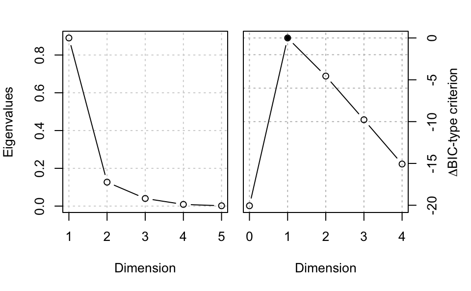
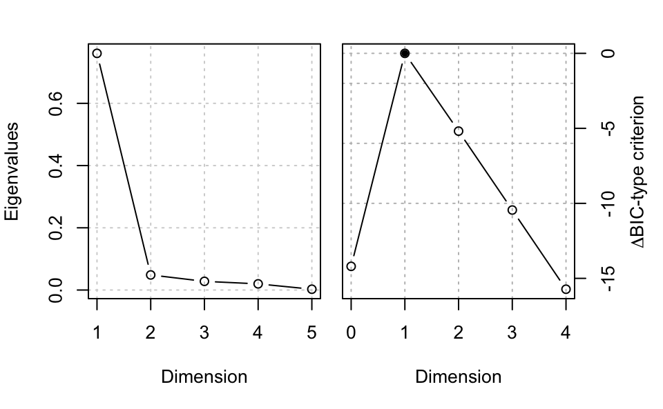

A quick tour of msir
Luca Scrucca
20 Dec 2018
msir.RmdIntroduction
Model-based Sliced Inverse Regression (MSIR) is a dimension reduction method based on Gaussian finite mixture models which provides an extension to sliced inverse regression (SIR).
The basis of the MSIR subspace is estimated by modeling the inverse distribution within slice using Gaussian finite mixtures with number of components and covariance matrix parameterization selected by BIC or defined by the user.
The msir package implements the methodology described in Scrucca (2011).
This vignette is written in R Markdown using the knitr package for production.
Examples
1-dimensional nonlinear response curve
n <- 200
p <- 5
b <- as.matrix(c(1,-1,rep(0,p-2)))
x <- matrix(rnorm(n*p), nrow = n, ncol = p)
y <- exp(0.5 * x%*%b) + 0.1*rnorm(n)
MSIR <- msir(x, y)
summary(MSIR)
## --------------------------------------------------
## Model-based SIR
## --------------------------------------------------
##
## Slices:
## 1 2 3 4 5 6
## GMM XXI EEI XXX XXX XXX XII
## Num.comp. 1 2 1 1 1 1
## Num.obs. 33 9|24 33 33 33 35
##
## Estimated basis vectors:
## Dir1 Dir2 Dir3 Dir4 Dir5
## x1 0.719233 0.665189 -0.35087 0.088328 0.289256
## x2 -0.693391 0.578066 -0.33561 0.195841 0.141172
## x3 0.027810 0.215261 0.30793 0.626084 -0.655309
## x4 -0.019198 -0.013048 -0.52209 -0.425878 -0.678608
## x5 -0.027765 0.420542 0.62996 -0.616840 -0.080389
##
## Dir1 Dir2 Dir3 Dir4 Dir5
## Eigenvalues 0.89038 0.12676 0.04031 0.00887 1.6342e-03
## Cum. % 83.37250 95.24195 99.01642 99.84698 1.0000e+02
plot(MSIR, type = "evalues")


1-dimensional symmetric response curve
n <- 200
p <- 5
b <- as.matrix(c(1,-1,rep(0,p-2)))
x <- matrix(rnorm(n*p), nrow = n, ncol = p)
y <- (0.5 * x%*%b)^2 + 0.1*rnorm(n)
MSIR <- msir(x, y)
summary(MSIR)
## --------------------------------------------------
## Model-based SIR
## --------------------------------------------------
##
## Slices:
## 1 2 3 4 5 6
## GMM XXX XXI XII XII EEV EII
## Num.comp. 1 1 1 1 2 2
## Num.obs. 33 33 33 33 13|20 16|19
##
## Estimated basis vectors:
## Dir1 Dir2 Dir3 Dir4 Dir5
## x1 0.7032497 -0.32265327 0.17850 0.50213 0.48315
## x2 -0.7097760 -0.20051289 0.26844 0.34153 0.51756
## x3 0.0207609 -0.64666898 0.42755 -0.59757 0.03875
## x4 0.0020883 -0.00061766 0.69106 0.35396 -0.60040
## x5 -0.0349652 -0.66144409 -0.48550 0.38580 -0.36976
##
## Dir1 Dir2 Dir3 Dir4 Dir5
## Eigenvalues 0.76068 0.048494 0.027907 0.01981 2.6055e-03
## Cum. % 88.50291 94.145085 97.392035 99.69686 1.0000e+02
plot(MSIR, type = "evalues")


2-dimensional response curve
n <- 300
p <- 5
b1 <- c(1, 1, 1, rep(0, p-3))
b2 <- c(1,-1,-1, rep(0, p-3))
b <- cbind(b1,b2)
x <- matrix(rnorm(n*p), nrow = n, ncol = p)
y <- x %*% b1 + (x %*% b1)^3 + 4*(x %*% b2)^2 + rnorm(n)
MSIR <- msir(x, y)
summary(MSIR)
## --------------------------------------------------
## Model-based SIR
## --------------------------------------------------
##
## Slices:
## 1 2 3 4 5 6 7 8
## GMM XXI VVE EEV EVE XII EEV XII XXI
## Num.comp. 1 2 2 3 1 2 1 1
## Num.obs. 42 12|30 16|26 18|12|12 42 25|17 42 6
##
## Estimated basis vectors:
## Dir1 Dir2 Dir3 Dir4 Dir5
## x1 0.320287 0.944245 -0.019421 -0.047184 -0.14173
## x2 0.635841 -0.256139 0.464958 0.182138 -0.50389
## x3 0.695964 -0.194734 -0.298009 -0.145248 0.62064
## x4 -0.092271 0.065128 0.818368 -0.361349 0.42430
## x5 0.015541 -0.025113 -0.157804 -0.901626 -0.40099
##
## Dir1 Dir2 Dir3 Dir4 Dir5
## Eigenvalues 0.65327 0.36881 0.054035 0.025591 0.013548
## Cum. % 58.57625 91.64546 96.490546 98.785167 100.000000
plot(MSIR, type = "evalues")


To obtain rotating 3D spinplot use: